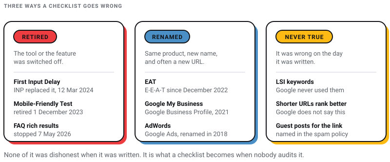
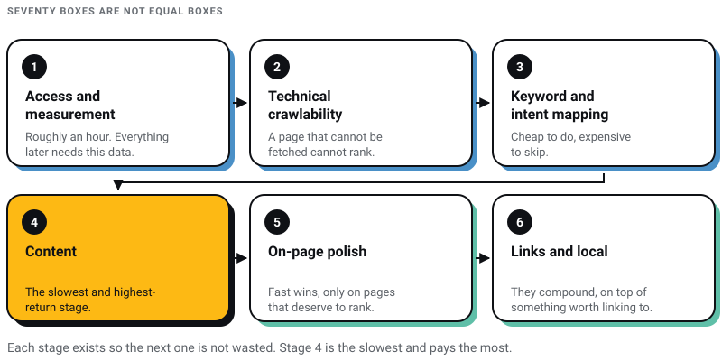
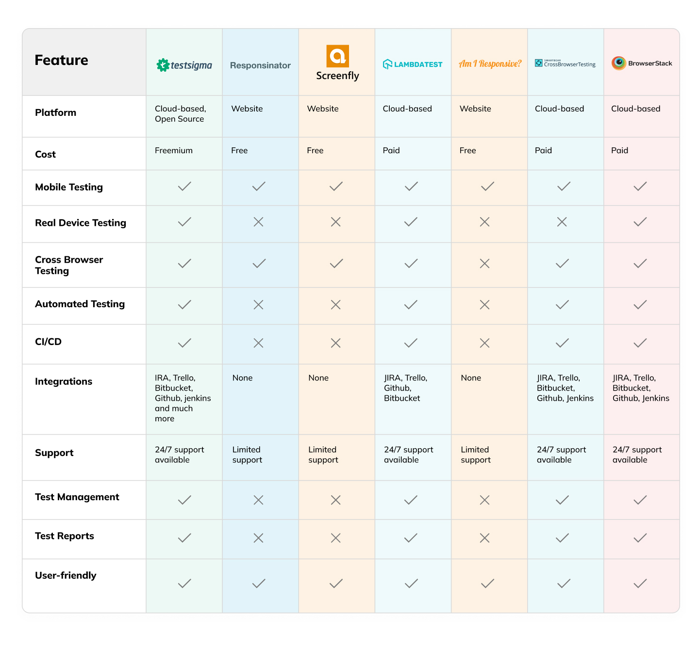
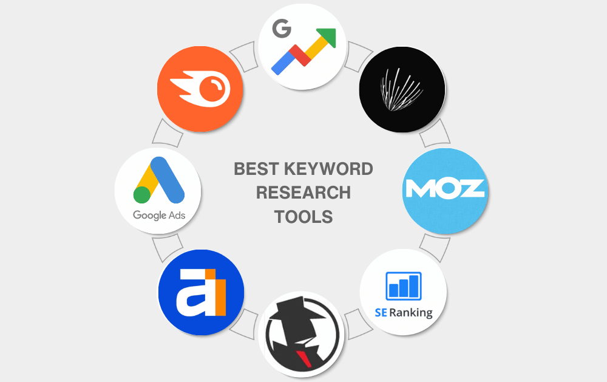

Digital Marketing
Digital Marketing
AEO vs GEO vs SEO: What Actually Matters in 2026 (And What Is Just Noise)
Learn about AEO vs GEO vs SEO. Discover what changed with AI search, what still matters, and how to optimize for Google AI Overviews, ChatGPT, and…

Most SEO checklists are written to be long. That is the wrong design goal. A beginner opens a seventy-item list, does the first four things, and never comes back to it.
I sell SEO work, so the commercial move here is to make the list look enormous and complicated. I am going to do the opposite. Below is a shorter, ordered list, with the items that stopped being true named as such rather than quietly carried forward.
The quiet carrying-forward is the real disease in this genre. Checklists still circulating tell you to optimise for EAT, to test your site with Google’s Mobile-Friendly Test, and to build links with a tactic Google’s own spam policy names as spam. Google added the second E in December 2022 and switched the Mobile-Friendly Test off in December 2023. None of that advice was dishonest when it was written. It is simply what a checklist becomes when it is published once and never audited.
So this page does two jobs. It gives you the checks, and it tells you which of yesterday’s checks to stop running. Where a correction matters, I have linked the primary document from Google, web.dev or Microsoft rather than a summary of it, because in this field the summaries are where stale advice goes to breed.
If you only do six things, do these, in this order.
Everything after this is detail. Useful detail, but detail.
If you are working from any SEO checklist written before 2025, assume it contains most of the left-hand column. I have linked the primary document for every correction so you can check me rather than take my word for it.
| Old advice | What is actually true now |
|---|---|
| Optimise for EAT | E-E-A-T. Google added a second E, for Experience, in December 2022. Trust is the most important of the four. |
| Fix your First Input Delay | FID was retired. INP replaced it on 12 March 2024. |
| Run Google’s Mobile-Friendly Test | Google retired the tool, the API and the Search Console Mobile Usability report on 1 December 2023 and pointed people at Lighthouse. |
| Add FAQ schema for rich results | FAQ rich results stopped appearing in Google Search on 7 May 2026. Keeping the markup does no harm, but it buys you nothing in the results page. |
| Shorter URLs rank better | Google does not say this. Its URL structure guidance only asks you to trim parameters that do not change the content. |
| Use LSI keywords | There is no such thing. Latent semantic indexing is a 1980s technique Google never used for this. Write about the topic properly instead. |
| Build links through ghost posting and guest posts | Google’s spam policies name “links with optimized anchor text in articles, guest posts, or press releases distributed on other sites” as link spam, alongside “low-quality directory or bookmark site links”. |
| Go to google.com/webmasters | That URL now lands on Search Central documentation. Search Console lives at search.google.com/search-console. |
| Add your Analytics Tracking ID | Universal Analytics is gone. GA4 uses a Measurement ID beginning with G-. |
| Set up Google My Business | Renamed Google Business Profile in November 2021, and the standalone app was retired. Websites built inside Business Profile were switched off in March 2024. |
| List on Foursquare | Foursquare City Guide shut down on 15 December 2024; the web version followed in April 2025. |
| Check Search Console for penalties | Google’s word is manual action, issued when a human reviewer finds a spam-policy breach. Algorithmic drops never appear in that report, which is why most people looking there find nothing. |

Checklists usually fail because they present seventy equal-looking boxes. They are not equal. This is the sequence I would defend, and the reason each stage comes where it does.
That ordering is my recommendation, not Google’s. I put technical work before keyword research because I have lost more client months to an unrenderable page than to a badly chosen keyword.

The boring hour that pays for itself. None of it costs money.
I run these before writing anything. They are unglamorous and they are the ones that silently cost the most.
OAI-SearchBot, GPTBot, ClaudeBot, PerplexityBot. Most sites inherited whatever their host set by default. If being cited in AI answers matters to you, that default deserves a decision.rel="canonical" so you are not competing against yourself.This is the item people still treat as optional. Google’s documentation is plain: it “uses the mobile version of a site’s content, crawled with the smartphone agent, for indexing and ranking”, which it calls mobile-first indexing. Since July 2024 there are no desktop-only exceptions left.
If your site fails these checks, the problem is the build rather than the SEO, and no amount of on-page work will paper over it.

Source: testsigma.com
There are exactly three thresholds, they are published by Google’s own web.dev team, and they are measured at the 75th percentile of real page loads, split between mobile and desktop.
| Metric | What it measures | Good |
|---|---|---|
| LCP | How long the largest visible element takes to render | Under 2.5 seconds |
| INP | How long the page takes to respond to interactions | Under 200 milliseconds |
| CLS | How much the layout jumps while loading | Under 0.1 |
Source: web.dev. You will see blog posts claiming the LCP target tightened to 2.0 seconds. It did not. Check the primary document before you rebuild a site around a number somebody rounded down for a headline.
If certificates are unfamiliar territory, the mechanics are in my guide to SSL.
Google sees, by its own count, “more than 5 trillion searches on Google annually” (Google, March 2025, citing internal data from January 2025). None of that scale helps you. Perhaps forty of those queries matter to your business, and the whole job is finding those forty.
The full method, including how I handle low-volume terms worth chasing anyway, is in my keyword research guide.

This is where the checklists in circulation are most out of date, and where being out of date costs the most.
Google’s quality rater guidelines have used four letters since December 2022. Experience, Expertise, Authoritativeness, Trustworthiness. The first E was added because a page written by someone who has actually done the thing is not the same as a page written by someone who has read about it. The current guidelines document is dated 11 September 2025, which widened the Your Money or Your Life category and added guidance for rating AI Overviews without changing the underlying rating standard.
Two things in Google’s own helpful content documentation are worth pinning above your desk. First: “Of these aspects, trust is most important. The others contribute to trust.” Second, the self-assessment question: “Does your content clearly demonstrate first-hand expertise and a depth of knowledge (for example, expertise that comes from having actually used a product or service, or visiting a place)?”

Source: fatjoe.com
Fast to do, and worth doing only on pages that already have something to say.
Schema markup is not a ranking factor. It makes you eligible for specific search features, and the list of features keeps changing.
Keep a real FAQ section on your pages if your customers really ask those questions. Write it for them. Just stop expecting the search results page to pay you for it.
Ghost posting and guest posts placed for the link are still standard advice in this genre, and they should not be. Google’s spam policies list “links with optimized anchor text in articles, guest posts, or press releases distributed on other sites” and “low-quality directory or bookmark site links” as link spam. That has been true for years. It is just widely ignored.
The longer argument, including how I evaluate whether a link is worth the effort, is in my backlinks strategy guide, and the advanced tactics sit in advanced SEO techniques.

Source: ignitevisibility.com
Sharing a post on social media does not pass ranking credit. It gets the post in front of people, some of whom run websites, and links come from people. That is the whole mechanism. Treat social as distribution, not as an SEO tactic, and you will stop being disappointed by it.
For a business in Kolkata competing with agencies in Kolkata, this section outranks most of the technical work above. Local intent is the closest thing to a buyer raising a hand.
The mechanics of ranking in the map pack are their own subject, and I have covered them in local SEO ranking factors and the map pack.

Source: onlinemarketinginct.com
Everything above would have been a complete checklist in 2023. It is not complete now, because a growing share of searches ends inside a generated answer rather than on a list of links.
Google’s position, published in May 2026, is calmer than most agency decks: the best practices for SEO “continue to be relevant because our generative AI features on Google Search are rooted in our core Search ranking and quality systems” (Search Central). So this is a short section, and most of it is things you have already done.
llms.txt file are both effort with very little evidence behind them.If you want the argument rather than the checklist, I have written about how SEO, AEO and GEO actually differ and where the three-retainer sales pitch falls apart.
Pick five of these and review them monthly. Tracking twenty numbers nobody acts on is a way of looking busy.
Link Search Console to GA4 so you can see which queries lead to which landing pages and which of those produce enquiries. That join is where SEO reporting stops being decorative.
Every tool below was working when I checked it in July 2026. Tool lists rot fast, so open the ones you plan to rely on before you build a process around them.
Free, and enough to start:
Paid, once you have outgrown the free tier:
Let me tell you what I actually believe, and it is uncomfortable for someone who sells SEO retainers. Most of the list above is not where a beginner’s first week should go.
Spend it on four things. Verify Search Console and GA4. Confirm Google can render your site on a phone. Fix the single worst page-speed problem, which will almost certainly be an image. Then rewrite your most important page so it answers, in its first paragraph, the exact question a buyer types.
That is four items out of roughly seventy. It will move more than the other sixty-six combined, and it is the part no tool can do for you. The rest is maintenance, and maintenance is what a retainer is for. I would rather say that plainly than sell you sixty boxes to tick.
The other thing I would say: audit your own advice on a calendar. This page told people to optimise for EAT for three and a half years after Google added the second E. I am not proud of that. Whatever you publish, put a date on it and a reminder to check it.
How long does SEO take to work?
For a new site, expect three to six months before rankings on anything competitive, and longer in a crowded market. Technical fixes and title rewrites can show movement in weeks because the page is already indexed. Content and links compound slowly. Anyone promising page one in thirty days is either targeting queries nobody searches or is about to do something you will have to clean up.
Is EAT still a thing, or is it E-E-A-T now?
E-E-A-T. Google added Experience as a fourth element in December 2022, and the current rater guidelines, dated 11 September 2025, still use it. In practice the extra E means a page written from having actually done the thing beats a competent summary of what others have written. Trust is the element Google calls most important; the other three feed it.
Should I still add FAQ schema to my pages?
Not for rich results. FAQ rich results stopped appearing in Google Search on 7 May 2026, Google withdrew the documentation in June, and Search Console API support ends in August 2026. Existing markup causes no harm and FAQPage is still a valid schema type, so there is nothing to rush and remove. Keep a real FAQ section for readers, and stop treating it as a route to extra space in the results page.
What are the current Core Web Vitals thresholds?
LCP under 2.5 seconds, INP under 200 milliseconds, CLS under 0.1, all measured at the 75th percentile of real visits and reported separately for mobile and desktop. INP replaced First Input Delay on 12 March 2024, so any checklist still telling you to fix FID is at least two years old.
Do I need to check my site with Google’s Mobile-Friendly Test?
You cannot. Google retired the tool, its API and the Search Console Mobile Usability report on 1 December 2023 and recommended Lighthouse instead. Since Google indexes the mobile version of your pages, the more useful test is loading your own site on your own phone on mobile data and looking for anything missing.
Are guest posts a safe way to build links?
Not when the point is the link. Google’s spam policies name links with optimised anchor text in guest posts distributed across other sites as link spam, and low-quality directory links alongside them. Writing for a publication your buyers actually read is good marketing and often produces a link as a side effect. The difference is whether the article would be worth publishing without the link in it.
How many of these items does a small business really need?
Fewer than you think, and in a specific order. Access and measurement, mobile crawlability, one keyword mapped per page, one page rewritten to answer the question properly. If those four are genuinely done, you are ahead of most of your local competitors, who have a longer checklist and a shorter attention span.
Work down the list in order, one section a week, and mark the date you did each one. A checklist you revisit beats a longer checklist you abandon.
If SEO’s direction rather than its mechanics is what you are weighing, I have set out where I think this is heading in the future of SEO. And if you would rather hand it to someone, we are a Kolkata studio that designs and builds for brands including Coca-Cola, ITC and Marico, and our SEO services start from the same list you just read. Either way, the list is yours.
24 min read 29 cited sources Digital Marketing
Author
Khurshid Alam is the founder of Pixel Street, an AI-native design & development studio. Design thinking on weekdays and spreadsheets on weekends.
He writes about growth, design, and AI, mostly because someone has to say the quiet parts out loud.
Digital Marketing
Learn about AEO vs GEO vs SEO. Discover what changed with AI search, what still matters, and how to optimize for Google AI Overviews, ChatGPT, and…
 Digital Marketing
Digital Marketing
Discover the 5 reasons ChatGPT recommends your competitors instead of your business—and how to improve AI visibility, SEO, GEO, and AEO.
 Digital Marketing
Digital Marketing
Want ChatGPT to recommend your brand? Learn how AI chooses businesses, where citations come from, and practical ways to increase your visibility.
 Digital Marketing
Digital Marketing
Imagine stumbling upon a secret formula that not only boosts your content’s visibility but also ensures it towers over the competition. That’s exactly…


{kind=link}
{kind=link}